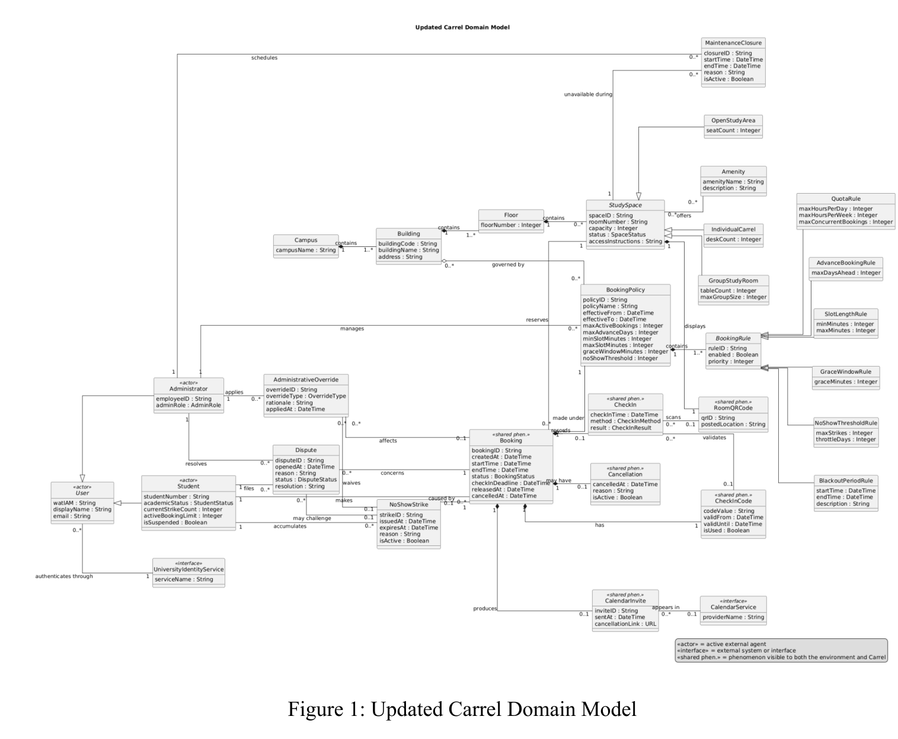
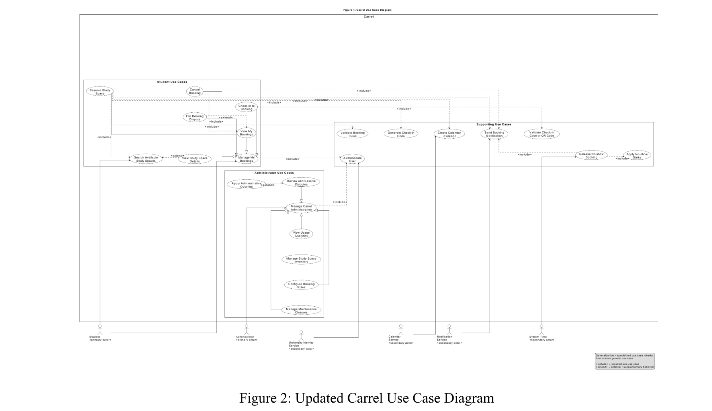
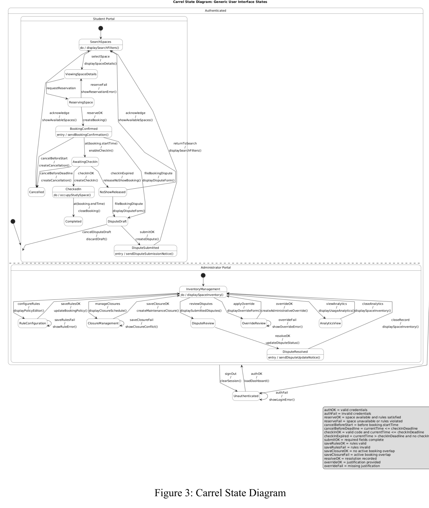
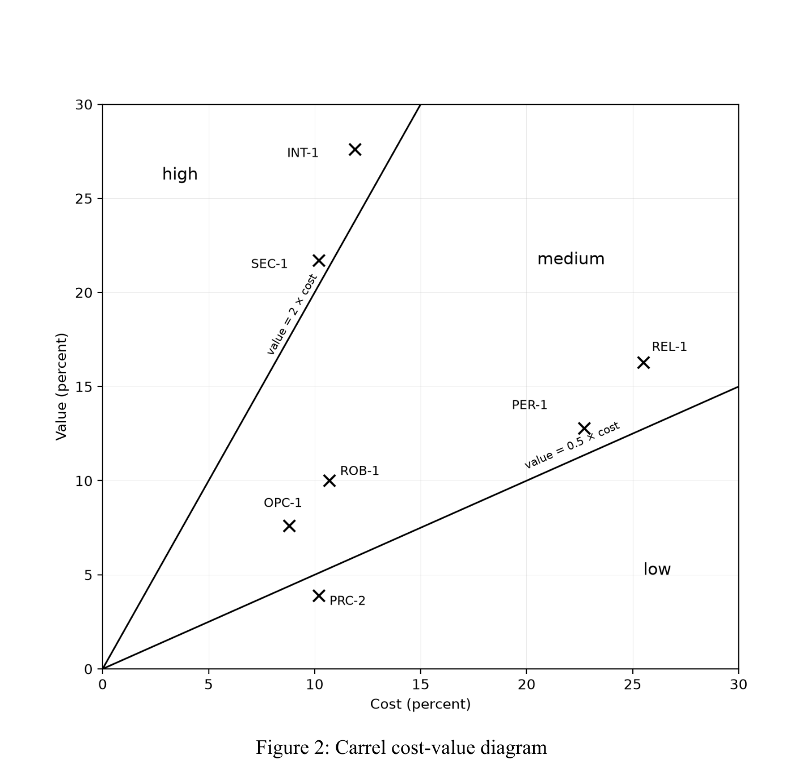
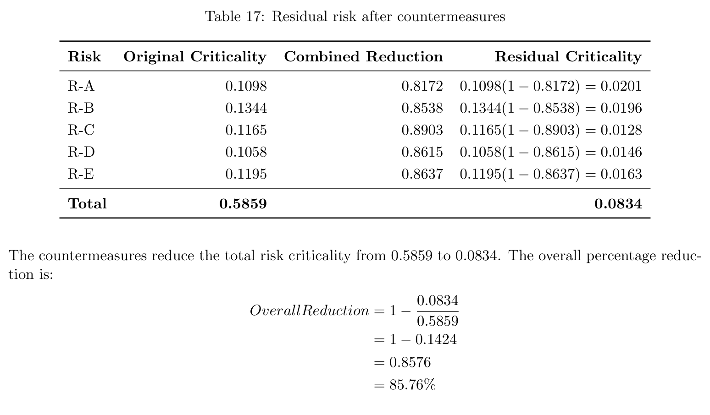
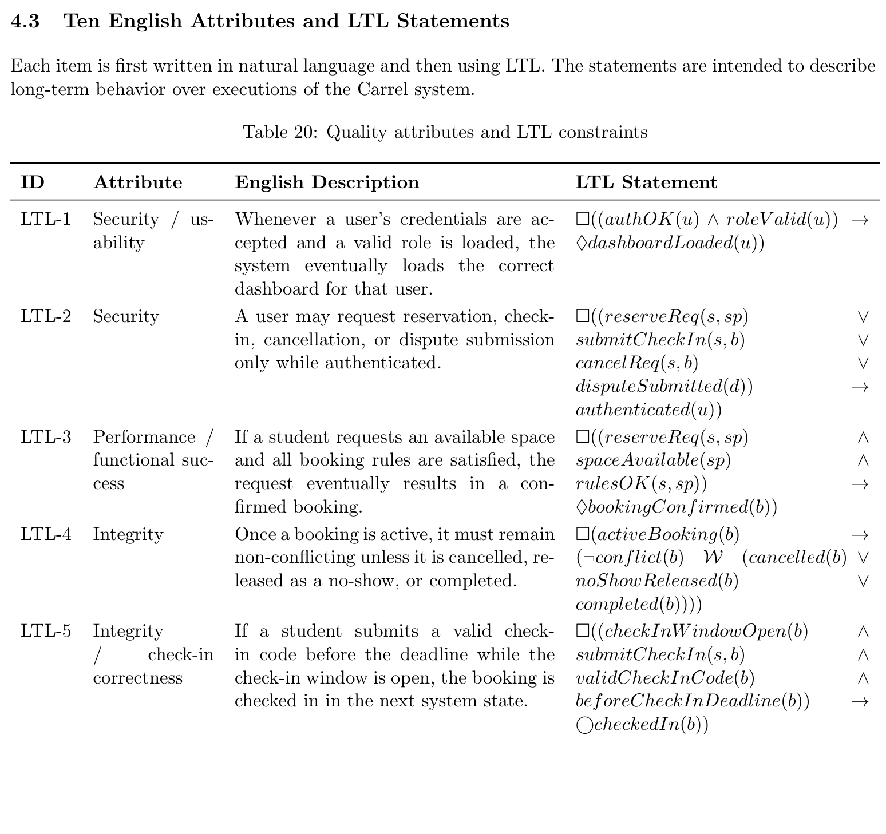

Poor visibility
Students need one place to compare location, capacity, amenities, accessibility, and availability.
Carrel is a proposed campus-wide system for finding, reserving, and checking in to study spaces—designed to prevent conflicting bookings, reclaim no-shows, and give administrators a traceable view of demand.
The work defines what Carrel should do, when actions are legal, how quality should be measured, and how delivery risk can be analyzed. Performance numbers below are testable targets; effort and risk numbers are model outputs. They are not production measurements.
The opportunity
Campus study space is scarce, yet the path from “I need a room” to “I am checked in” is often fragmented. Carrel turns that ambiguity into one policy-aware journey.
Students need one place to compare location, capacity, amenities, accessibility, and availability.
Booked rooms can sit empty when a student does not arrive and the capacity is never released.
Overlaps, quotas, advance windows, and maintenance closures require consistent enforcement.
Disputes and exceptions need linked records, explicit reasons, and an auditable decision trail.
Proposed solution
The design connects student tasks, administrator controls, and timed services around a single booking lifecycle—from discovery to completion, cancellation, or no-show release.
End-to-end flow
Search results can become stale. Before creating a booking, Carrel checks the student, time interval, active-booking limit, overlaps, closures, and applicable rules again. Failure returns a specific reason without leaving a partly accepted booking.
Evidence, not decoration
Each artifact answers a different question: what exists, who acts, how state changes, which requirements matter most, and what must remain true over time. Select an image to open its source PDF.






Functional precision
Five operations define signatures, preconditions, state changes, postconditions, and exception behavior. Twelve OCL invariants describe persistent consistency, while ten LTL properties capture behavior across time.
(t₁ < booking.end) ∧ (t₂ > booking.start)
Back-to-back bookings can meet at one endpoint; genuine overlaps are rejected.
G(activeBooking(b) → (¬conflict(b) W (cancelled(b) ∨ noShowReleased(b) ∨ completed(b))))
An active booking remains non-conflicting until it is cancelled, released, or completed.
Quantitative engineering
The quality specification defines evaluation conditions and fit criteria. These values are design targets for a future implementation, not observed product performance.
Planning model
Function Point Analysis and organic COCOMO translate the proposed scope into a planning baseline. They support discussion; they do not guarantee actual cost or delivery time.
Risk model
Five risks were assigned probabilities, impacts, and mitigation efficiencies. Under those assumptions, the displayed totals imply an 85.77% reduction. This is a model result—not measured real-world efficacy.
Requirements journey
Define the problem, vision, boundary, assumptions, and system context.
Map stakeholders, concepts, relationships, goals, concerns, and influence.
Connect actors to goals, main success scenarios, alternatives, and exceptions.
Define operations, OCL invariants, lifecycle state, and legal transitions.
Replace vague qualities with fit criteria and prioritize cost against value.
Estimate scope and effort, model risks, and express temporal properties.
Synthesize project management, human factors, AI, and formal RE research.
Project documentation
Problem definition, vision, context, assumptions, and initial system boundary.
Open PDFConcepts, relationships, stakeholder groups, goals, concerns, and influence.
Open PDFActors, goals, main success scenarios, alternative flows, and exception paths.
Open PDFFive functional contracts, twelve invariants, and application state transitions.
Open PDFTwenty-one measurable requirements, trade-offs, cost–value ranking, and rationale.
Open PDFFunction points, COCOMO, risk countermeasures, and ten temporal properties.
Open PDFResearch synthesis across project practice, human factors, AI systems, and formal methods.
Open PDFThe Reservists
A University of Waterloo requirements-engineering project focused on fair access, explicit policy, and traceable decision-making for campus study spaces.
Read the complete project report